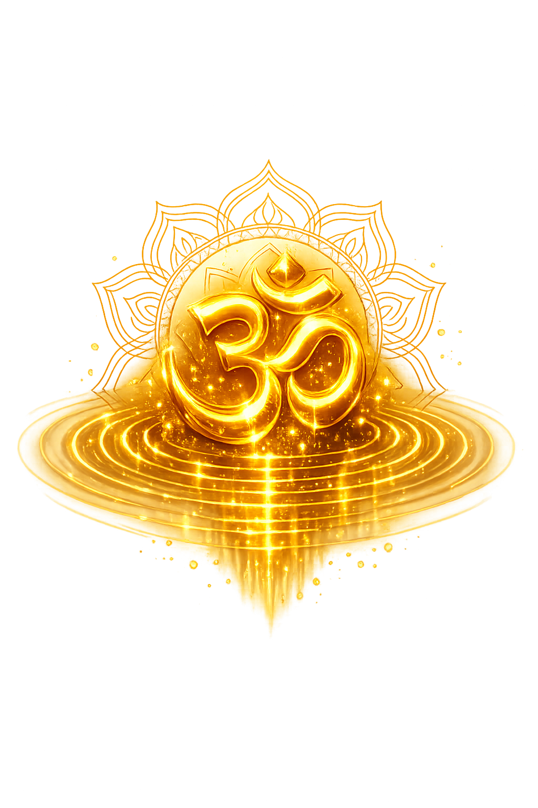

The Authentic Orthography
Sacred Syllable, Cosmic Sound · The primordial sound · Om
Unicode restoration and ASCII comparison
ओं
The name in its original Sanskrit form. Oṃ (ओं) is attested in the source tradition — “The sacred syllable of solemn affirmation — the sound from which the Vedas and creation itself proceed”. Its nasal retroflexes carry the full phonetic and orthographic weight of the source tradition.
om
Reduced to plain om, the name loses everything that made it specific: nasal retroflexes. What remains is an ASCII string that machines can parse but that no longer speaks with its original voice.
Oṃ
The Unicode restoration recovers what ASCII flattened. Oṃ restores nasal retroflexes, returning the name to its original written dignity. The domain encodes to Punycode, but the browser displays the truth.
Oṃ.com → xn--o-opm.com
The non-ASCII characters in Oṃ are encoded while the ASCII remains visible. To the DNS, it is Punycode. To humanity, it is Oṃ.
How Oṃ travels from ancient script to the modern URL
Sanskrit Oṃ; the sacred syllable of Hinduism, Buddhism, and Jainism; etymology is theological rather than linguistic.
Sacred Syllable, Cosmic Sound
The IAST form Oṃ uses registrable Latin diacritics; the Devanagari form is not supported in .com.
How Oṃ was spoken
Cosmic Sound, Sacred Affirmation, Mantric Seed
Oṃ is not a word in the ordinary sense. It is the sonic seed from which Vedic revelation, Upaniṣadic metaphysics, and Hindu, Buddhist, and Jain ritual practice all draw their breath. In the Sanskrit tradition it is the praṇava, the primordial sound that precedes speech and survives when speech falls silent. To chant it is to align the body, breath, and mind with the fundamental vibration that the tradition identifies with Brahman, the absolute.
Its three constituents — a, u, m — map onto the entire cosmos: the three states of consciousness, the three divine functions, and the three times. Beyond them lies the silence that follows, the fourth state (turīya) that is the goal of contemplation.
The sacred monosyllable that opens and closes Vedic recitation; without it, mantras are considered incomplete.
The three phonemes represent waking, dreaming, and deep sleep, and the three gods Brahmā, Viṣṇu, and Śiva.
The silence after Oṃ is the fourth state, pure consciousness without object, the Self that underlies all experience.
Oṃ is the Vedic 'yes, verily, so be it' (Monier-Williams); it sanctifies beginnings, endings, and every offering.
Stories of Oṃ
Oṃ has no biography, but it has a theology. Its 'mythology' is the story of how a single syllable became the audible form of the absolute, repeated by gods, sages, and seekers across millennia.
The Māṇḍūkya Upaniṣad, the shortest of the principal Upaniṣads, devotes itself entirely to Oṃ. It teaches that the syllable has four 'feet' (pāda): the sound 'a' is the waking state (vaiśvānara), 'u' is the dream state (taijasa), 'm' is deep sleep (prājña), and the silence that follows is the fourth state, turīya, the Self itself. This analysis turned Oṃ from a ritual exclamation into a complete metaphysical map.
The Chāndogya Upaniṣad identifies Oṃ as the essence of the three Vedas: just as all leaves are fastened to a single stalk, so all speech is fastened to this syllable (2.23.2–3). The one who knows Oṃ obtains whatever he desires, because Oṃ is the seed of all articulate power and the doorway through which the Vedic hymns reach the gods.
In the Gītā, Kṛṣṇa declares that among words he is the syllable 'a' (which begins Oṃ) and that the knowers of Brahman, beginning the sacrifice with Oṃ, attain the supreme goal (Gītā 17.23–24). The syllable thus becomes the signature of orthodox ritual, the sound with which every sacred action should commence.
Oṃ is an invitation to stop talking and start listening. It asks the chanter to feel the sound not as a word about reality but as a vibration of reality itself. The 'a' begins in the belly, the 'u' rises through the chest, the 'm' hums in the skull, and the silence after opens into a space that has no center and no edge.
Enter Extended Lore